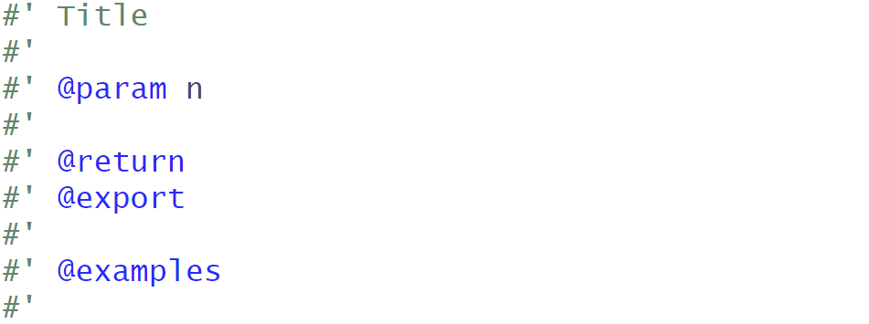

Exercises from Class #12: Help File/Manual
SDS 270
Introduction
In this lab, we will build a help file for a particular function.
- Goal: By the end of this lab, you should be able to build a help file and identify each of its parts.
Writing a help file
For an R package, we have discussed the various items it needs to be self-sufficient. We will look at a help file specifically and discover how to create one.
To start, locate your mypackage package that you created in the seventh class. Open the .Rproj file up and you should see your workspace.
We will be writing a help file for a single function, named fibonacci, which has the following specifications:
- Takes in one argument
n, which is the number of values returned from the Fibonacci sequence - Returns the sequence of the first
nvalues in a Fibonacci sequence.
These specifications are flexible to help you decide on how you want to structured your fibonacci function.
Create a new .R file called fibonacci.R in the /R folder.
In fibonacci.R, create your function. Write the function in the code chunk below as well.
Once done with the function in your R file, click inside the curly brackets. Then, go up to Code \(\rightarrow\) Insert ROxygen Skeleton. You will see something like this in your R file.

Based on the code you’ve written, ROxygen will generate a minimum skeleton that will be used for creating your manual for fibonacci.R. You can take a look at the following link from ROxygen for more information on what arguments can be placed in these comments:
We will need an introduction to show the user what the function does.
For the first #' in your skeleton, write a title for the fibonacci function.
Leave a #' for the next line. Afterwards, write @description in the next line, then write a one-sentence description of what the fibonacci() function does.
Leave a #' for the next line. Afterwards, write @details in the next line, then write a few sentences about how the function operates and if there are any restrictions users should know about.
You will notice that functions require three tags: @param, @returns, and @examples. We will fill these in one-by-one next.
You should see @param defined already in the skeleton. Add a quick sentence immediately after the input (on the same line) that discusses its type and what it represents.
You should see @return defined already in the skeleton. Add a quick sentence immediately after (on the same line) that discusses the type and shape of the output, along with what it represents.
Under @examples, provide two examples of how the fibonacci() function can be used. You can highlight edge cases if you want here.
You are now ready to build your manual! In the console, run devtools::document(). Then, type in ?mypackage::fibonacci in the console. You should now see your help file in the Help tab.
Turn-in
On Moodle, turn in the following files:
- Your
fibonacci.Rfile. - Your
fibonacci.Rdfile.